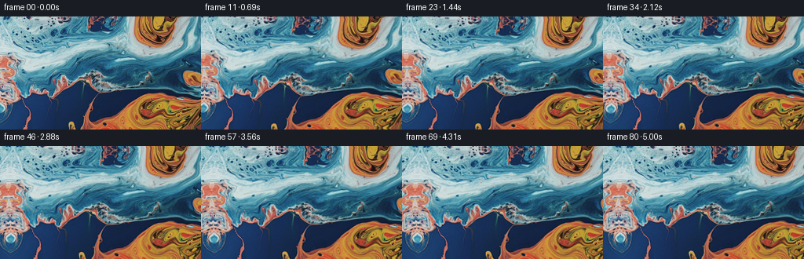
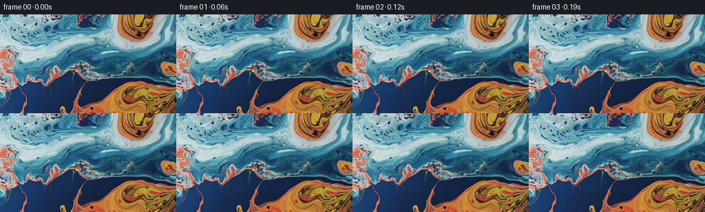

← 本轮 smoke 总览traex/DeepSeek-V4.1-Flash · 0001_s3
vision-agent · 256×144 · 16.0 FPS · 81 帧 · 状态 complete · 输出 tokens 17434
原始任务a close up of a blue and orange liquid, camera pans left
当前保存结果
已保存候选与代码修改
这里按时间展示外部捕获的候选，每份均可单独播放。保存新版本不等于完成视觉检查；下方工具证据记录实际看过的图。
候选 01 · 2026-11-08T23:57:35.323080+00:00 · 点开播放与检查图
inspection.png

transition_check.png

代码变化
--- 上一保存版本
+++ 本次保存版本
@@ -0,0 +1,152 @@
+"""Generate a left-panning liquid close-up from the supplied first frame."""
+
+from __future__ import annotations
+
+import argparse
+from pathlib import Path
+
+import cv2
+import numpy as np
+from PIL import Image
+
+import artifact_io
+
+
+WIDTH = 256
+HEIGHT = 144
+FRAMES = 81
+FPS = 16.0
+PAN_PIXELS = 23.0
+
+
+def smoothstep(value: np.ndarray | float) -> np.ndarray | float:
+ value = np.clip(value, 0.0, 1.0)
+ return value * value * (3.0 - 2.0 * value)
+
+
+def curl_flow(x: np.ndarray, y: np.ndarray, time_s: float) -> tuple[np.ndarray, np.ndarray]:
+ """Return a smooth, divergence-free displacement field in pixels."""
+ nx = x / WIDTH
+ ny = y / HEIGHT
+
+ # Curl of a small sum of traveling stream-function waves.
+ waves = (
+ (78.0, 0.72, 0.34, 0.31, 0.35),
+ (51.0, -0.38, 1.08, -0.44, 1.85),
+ (24.0, 1.31, -0.61, 0.57, 4.20),
+ )
+ u = np.zeros_like(x, dtype=np.float64)
+ v = np.zeros_like(y, dtype=np.float64)
+ for amplitude, fx, fy, omega, phase in waves:
+ angle = 2.0 * np.pi * (fx * nx + fy * ny) + omega * time_s + phase
+ cosine = np.cos(angle)
+ u += amplitude * (2.0 * np.pi * fy / HEIGHT) * cosine
+ v -= amplitude * (2.0 * np.pi * fx / WIDTH) * cosine
+
+ # Two broad counter-rotating eddies make the marbling fold rather than slide.
+ eddies = (
+ (0.31 * WIDTH + 2.8 * np.sin(0.63 * time_s),
+ 0.36 * HEIGHT + 2.0 * np.cos(0.48 * time_s),
+ 65.0, 5.2, 1.0),
+ (0.71 * WIDTH - 2.4 * np.sin(0.55 * time_s),
+ 0.66 * HEIGHT + 2.2 * np.sin(0.71 * time_s),
+ 48.0, -3.7, 1.0),
+ )
+ for cx, cy, sigma, amplitude, direction in eddies:
+ dx = x - cx
+ dy = y - cy
+ weight = np.exp(-(dx * dx + dy * dy) / (2.0 * sigma * sigma))
+ u += direction * amplitude * (-dy / sigma) * weight
+ v += direction * amplitude * (dx / sigma) * weight
+
+ gain = float(smoothstep(time_s / 0.85))
+ return gain * u, gain * v
+
+
+def fold_coordinate(value: np.ndarray, size: int) -> np.ndarray:
+ period = 2.0 * (size - 1)
+ folded = np.mod(value, period)
+ return np.where(folded <= size - 1, folded, period - folded)
+
+
+def extend_texture_coordinates(
+ qx: np.ndarray, qy: np.ndarray, time_s: float
+) -> tuple[np.ndarray, np.ndarray]:
+ """Mirror outside the source, with a gentle shear to avoid visible symmetry."""
+ left = np.maximum(0.0, -qx)
+ right = np.maximum(0.0, qx - (WIDTH - 1))
+ horizontal_depth = left + right
+ horizontal_blend = 1.0 - np.exp(-horizontal_depth / 5.5)
+ qx = np.abs(qx) + horizontal_blend * (
+ 1.7 * np.sin(0.085 * qy + 0.45) + 0.65 * np.sin(0.19 * qy)
+ )
+
+ top = np.maximum(0.0, -qy)
+ bottom = np.maximum(0.0, qy - (HEIGHT - 1))
+ vertical_depth = top + bottom
+ vertical_blend = 1.0 - np.exp(-vertical_depth / 4.0)
+ qy = np.abs(qy) + vertical_blend * (
+ 0.55 * np.sin(0.11 * qx - 0.35) + 0.20 * np.sin(0.23 * qx)
+ )
+ qy += 0.035 * horizontal_depth * np.sin(0.065 * qy + 0.28)
+
+ # A slow surface shear keeps the extended strip from reading as a hard mirror.
+ qx += 0.11 * horizontal_blend * np.sin(0.052 * qy + 0.7 * time_s)
+ qy += 0.08 * vertical_blend * np.sin(0.047 * qx - 0.5 * time_s)
+ return fold_coordinate(qx, WIDTH), fold_coordinate(qy, HEIGHT)
+
+
+def render_frame(source: np.ndarray, index: int) -> np.ndarray:
+ if index == 0:
+ return source.copy()
+
+ time_s = index / FPS
+ yy, xx = np.meshgrid(
+ np.arange(HEIGHT, dtype=np.float64),
+ np.arange(WIDTH, dtype=np.float64),
+ indexing="ij",
+ )
+
+ # Camera translation: scene coordinates move right as the camera moves left.
+ pan = PAN_PIXELS * time_s / ((FRAMES - 1) / FPS)
+ scene_x = xx - pan
+ scene_y = yy
+ flow_x, flow_y = curl_flow(scene_x, scene_y, time_s)
+ map_x, map_y = extend_texture_coordinates(
+ scene_x - flow_x, scene_y - flow_y, time_s
+ )
+
+ warped = cv2.remap(
+ source,
+ map_x.astype(np.float32),
+ map_y.astype(np.float32),
+ interpolation=cv2.INTER_CUBIC,
+ borderMode=cv2.BORDER_REFLECT_101,
+ )
+ return np.clip(np.rint(warped), 0, 255).astype(np.uint8)
+
+
+def generate(source: np.ndarray) -> np.ndarray:
+ return np.stack([render_frame(source, index) for index in range(FRAMES)])
+
+
+def main() -> None:
+ parser = argparse.ArgumentParser()
+ parser.add_argument(
+ "--output-dir", type=Path, default=Path(__file__).resolve().parent
+ )
+ args = parser.parse_args()
+
+ root = Path(__file__).resolve().parent
+ source = np.asarray(Image.open(root / "first_frame.png").convert("RGB"))
+ if source.shape != (HEIGHT, WIDTH, 3):
+ raise ValueError(f"Unexpected source shape: {source.shape}")
+
+ frames = generate(source)
+ if not np.array_equal(frames[0], source):
+ raise RuntimeError("Frame 0 is not pixel-identical to first_frame.png")
+ artifact_io.save(frames, args.output_dir)
+
+
+if __name__ == "__main__":
+ main()
可观测工具行为
命令 1 · 2026-11-08T23:56:09.050422+00:00/bin/bash -c "pwd && rg --files -g '"'!*.git*'"' | sed -n '1,200p'"
exit 0 命令 2 · 2026-11-08T23:56:09.299914+00:00/bin/bash -c "printf '%s\\n' '--- prompt.txt ---'; sed -n '1,240p' prompt.txt; printf '%s\\n' '--- GENERATION_RULES.md ---'; sed -n '1,260p' GENERATION_RULES.md"
exit 0 命令 3 · 2026-11-08T23:56:09.734036+00:00/bin/bash -c "find . -maxdepth 3 -type f -printf '%p\\t%k KB\\n' | sort | sed -n '1,240p'; printf '\\n--- dirs ---\\n'; find . -maxdepth 2 -type d | sort"
exit 0 命令 4 · 2026-11-08T23:56:13.719332+00:00/bin/bash -c "printf '%s\\n' '--- task_spec.json ---'; cat task_spec.json; printf '\\n%s\\n' '--- artifact_io.py ---'; sed -n '1,260p' artifact_io.py"
exit 0 命令 5 · 2026-11-08T23:56:14.525523+00:00/bin/bash -c "printf '%s\\n' '--- player_template.html ---'; sed -n '1,300p' player_template.html; printf '\\n%s\\n' '--- environment ---'; python3 - <<'PY'
import sys
print(sys.version)
for name in ['numpy','PIL','cv2','scipy','imageio','matplotlib']:
try:
m=__import__(name)
print(name, getattr(m,'__version__','available'))
except Exception as e:
print(name, 'MISSING', type(e).__name__)
PY
printf '\\n--- binaries ---\\n'; command -v ffmpeg; command -v ffprobe"exit 1 命令 6 · 2026-11-08T23:57:31.460781+00:00/bin/bash -c 'MPLCONFIGDIR=.tmp/mpl python3 generate.py'
exit 0 命令 7 · 2026-11-08T23:57:43.347641+00:00/bin/bash -c "python3 - <<'PY'
import imageio
print('imageio', imageio.__version__)
try:
import imageio_ffmpeg
print('imageio_ffmpeg', imageio_ffmpeg.__version__, imageio_ffmpeg.get_ffmpeg_exe())
except Exception as e:
print('imageio_ffmpeg unavailable:',repr(e))
PY
ls -lh frames/00.png frames/80.png pixels.npz index.html inspection.png transition_check.png"exit 0 命令 8 · 2026-11-08T23:57:44.013328+00:00/bin/bash -c "python3 - <<'PY'
from pathlib import Path
import numpy as np
from PIL import Image
p=Path('.')
src=np.array(Image.open('first_frame.png').convert('RGB'))
frames=np.stack([np.array(Image.open(p/'frames'/f'{i:02d}.png')) for i in range(81)])
print('shape', frames.shape, frames.dtype)
print('frame0 exact', np.array_equal(frames[0],src))
d=np.abs(np.diff(frames.astype(np.int16),axis=0))
print('adjacent MAE: min %.3f mean %.3f max %.3f' % (d.mean((1,2,3)).min(),d.mean((1,2,3)).mean(),d.mean((1,2,3)).max()))
print('frame0-80 MAE', np.abs(frames[0].astype(np.int16)-frames[-1]).mean())
print('all black', np.all(frames==0,axis=(1,2,3)).any())
print('range', frames.min(), frames.max())
for i in [0,1,2,4,8,20,40,60,80]:
Image.fromarray(frames[i]).save(f'.tmp/frame_{i:02d}.png')
PY"exit 0 命令 9 · 2026-11-08T23:57:54.173399+00:00/bin/bash -c "python3 - <<'PY'
from pathlib import Path
import numpy as np
from PIL import Image
from scipy import ndimage
frames=np.stack([np.array(Image.open(f'frames/{i:02d}.png').convert('RGB')) for i in range(81)])
gray=frames.astype(np.float32).mean(3)
# Translation recovery should approach 23 px leftward over the sequence.
xx,yy=np.meshgrid(np.arange(256),np.arange(144))
win=np.hanning(144)[:,None]*np.hanning(256)[None,:]
for i in [1,4,8,16,32,64,80]:
# phase correlation, same-window normalized
a=(gray[0]-gray[0].mean())*win
b=(gray[i]-gray[i].mean())*win
corr=np.fft.ifft2(np.fft.fft2(a)*np.conj(np.fft.fft2(b))).real
peak=np.unravel_index(np.argmax(corr),corr.shape)
sy,sx=peak
if sy>72:sy-=144
if sx>128:sx-=256
print(f'{i:02d}: apparent source shift dx={sx:+d}, dy={sy:+d}')
# print edge differences where left strip grows
for i in [1,8,20,40,60,80]:
strip=max(1,int(np.ceil(23*i/80))+2)
edge=np.abs(np.diff(frames[i].astype(np.int16),axis=1)).mean()
print(f'{i:02d}: new-left={strip:2d}px overall horizontal-gradient={edge:.2f}')
PY"exit 0 命令 10 · 2026-11-08T23:58:04.456437+00:00/bin/bash -c "python3 - <<'PY'
from pathlib import Path
import base64,json,re
import numpy as np
from PIL import Image
root=Path('.')
spec=json.loads((root/'task_spec.json').read_text())
with np.load(root/'pixels.npz') as z:
packed=z['pixels']
frames=np.stack([
np.stack([(packed[:,:,i]>>16)&255,(packed[:,:,i]>>8)&255,packed[:,:,i]&255],axis=2)
for i in range(packed.shape[2])
],axis=0)
src=np.asarray(Image.open(root/'first_frame.png').convert('RGB'))
assert frames.shape==(81,144,256,3) and frames.dtype==np.uint8
assert np.array_equal(frames[0],src)
html=(root/'index.html').read_text()
data=json.loads(re.search(r'const DATA=(\\{.*?\\}),W=',html).group(1))
first=np.frombuffer(base64.b64decode(data['first']),dtype='<u4').reshape(144,256)
assert data['frames']==81 and data['fps']==16.0 and len(data['deltas'])==80
assert np.array_equal(first,packed[:,:,0])
print('Contract: 81 x 256 x 144 RGB, 16 fps')
print('Frame 00: pixel-identical to first_frame.png')
print('HTML: 81 frames, 80 delta packets, valid payload')
print('Duration: %.4f s' % (81/16))
PY
printf '\\nGenerated files:\\n'
find . -maxdepth 2 -type f -printf '%p\\n' | sort | sed -n '1,140p'
printf '\\nGit status:\\n'
git status --short"exit 0 命令 11 · 2026-11-08T23:58:10.424819+00:00/bin/bash -c "python3 - <<'PY'
from pathlib import Path
import base64,json,re
import numpy as np
from PIL import Image
root=Path('.')
with np.load(root/'pixels.npz') as z:
packed=z['pixels']
frames=np.stack([
np.stack([(packed[:,:,i]>>16)&255,(packed[:,:,i]>>8)&255,packed[:,:,i]&255],axis=2).astype(np.uint8)
for i in range(packed.shape[2])
],axis=0)
src=np.asarray(Image.open(root/'first_frame.png').convert('RGB'))
assert frames.shape==(81,144,256,3) and frames.dtype==np.uint8
assert np.array_equal(frames[0],src)
html=(root/'index.html').read_text()
data=json.loads(re.search(r'const DATA=(\\{.*?\\}),W=',html).group(1))
first=np.frombuffer(base64.b64decode(data['first']),dtype='<u4').reshape(144,256)
assert data['frames']==81 and data['fps']==16.0 and len(data['deltas'])==80
assert np.array_equal(first,packed[:,:,0])
print('Contract: 81 x 256 x 144 RGB, 16 fps')
print('Frame 00: pixel-identical to first_frame.png')
print('HTML: 81 frames, 80 delta packets, valid payload')
print('Duration: %.4f s' % (81/16))
PY
python3 -m py_compile generate.py
printf '\\nChecks passed.\\n'"exit 0 视觉工具实际返回图片 1

视觉工具实际返回图片 2

视觉工具实际返回图片 3

视觉工具实际返回图片 4
视觉工具实际返回图片 5
保存候选 1 份；完成命令 11 次；可验证图片返回 5 张。原始 API 响应与完整日志保留在本地。